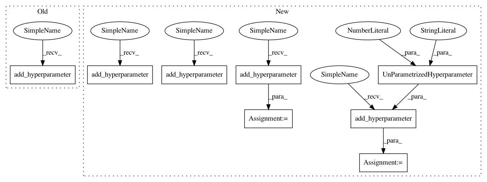

53da02f8d5923d32f3c11a28b0e11f64d905399d,ParamSklearn/components/regression/gradient_boosting.py,GradientBoosting,get_hyperparameter_search_space,#Any#,127
Before Change
cs = ConfigurationSpace()
cs.add_hyperparameter(n_estimators)
cs.add_hyperparameter(loss)
cs.add_hyperparameter(learning_rate)
cs.add_hyperparameter(max_features)
cs.add_hyperparameter(max_depth)
cs.add_hyperparameter(min_samples_split)
cs.add_hyperparameter(min_samples_leaf)
After Change
@staticmethod
def get_hyperparameter_search_space(dataset_properties=None):
cs = ConfigurationSpace()
loss = cs.add_hyperparameter(CategoricalHyperparameter(
"loss", ["ls", "lad", "huber", "quantile"], default="ls"))
learning_rate = cs.add_hyperparameter(UniformFloatHyperparameter(
name="learning_rate", lower=0.0001, upper=1, default=0.1, log=True))
n_estimators = cs.add_hyperparameter(Constant("n_estimators", 100))
max_depth = cs.add_hyperparameter(UniformIntegerHyperparameter(
name="max_depth", lower=1, upper=10, default=3))
min_samples_split = cs.add_hyperparameter(UniformIntegerHyperparameter(
name="min_samples_split", lower=2, upper=20, default=2, log=False))
min_samples_leaf = cs.add_hyperparameter(UniformIntegerHyperparameter(
name="min_samples_leaf", lower=1, upper=20, default=1, log=False))
min_weight_fraction_leaf = cs.add_hyperparameter(
UnParametrizedHyperparameter("min_weight_fraction_leaf", 0.))
subsample = cs.add_hyperparameter(UniformFloatHyperparameter(
name="subsample", lower=0.01, upper=1.0, default=1.0, log=False))
max_features = cs.add_hyperparameter(UniformFloatHyperparameter(
"max_features", 0.5, 5, default=1))
max_leaf_nodes = cs.add_hyperparameter(UnParametrizedHyperparameter(
name="max_leaf_nodes", value="None"))
alpha = cs.add_hyperparameter(UniformFloatHyperparameter(
"alpha", lower=0.75, upper=0.99, default=0.9))
cs.add_condition(InCondition(alpha, loss, ["huber", "quantile"]))
return cs
In pattern: SUPERPATTERN
Frequency: 3
Non-data size: 8
Instances
Project Name: automl/auto-sklearn
Commit Name: 53da02f8d5923d32f3c11a28b0e11f64d905399d
Time: 2015-10-01
Author: feurerm@informatik.uni-freiburg.de
File Name: ParamSklearn/components/regression/gradient_boosting.py
Class Name: GradientBoosting
Method Name: get_hyperparameter_search_space
Project Name: automl/auto-sklearn
Commit Name: 53da02f8d5923d32f3c11a28b0e11f64d905399d
Time: 2015-10-01
Author: feurerm@informatik.uni-freiburg.de
File Name: ParamSklearn/components/classification/gradient_boosting.py
Class Name: GradientBoostingClassifier
Method Name: get_hyperparameter_search_space
Project Name: automl/auto-sklearn
Commit Name: fb01effccf0c2271b1c4a81da55d8d1c6e009d2f
Time: 2016-04-12
Author: eggenspk@informatik.uni-freiburg.de
File Name: autosklearn/pipeline/components/classification/xgradient_boosting.py
Class Name: GradientBoostingClassifier
Method Name: get_hyperparameter_search_space